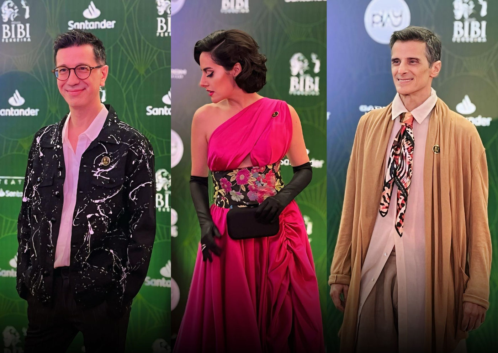

Prêmio Bibi Ferreira 2024: Confira os Ganhadores

A 11ª edição do Prêmio Bibi Ferreira aconteceu no Teatro Santander, em São Paulo, celebrando o melhor do teatro de prosa e musical da última temporada.
A cerimônia foi marcada por discursos emocionantes, homenagens a figuras icônicas do teatro brasileiro, e a celebração dos 33 anos da Lei Rouanet, um pilar essencial para a produção cultural no Brasil.
Momentos de Destaque:
Nathalia Timberg, grande homenageada da noite, emocionou o público ao discursar sobre a importância do teatro e a responsabilidade de mantê-lo vivo.
O Ministério da Cultura foi homenageado com a Medalha Arthur Azevedo pela criação da Lei Rouanet, recebida por Henilton Menezes em nome da Ministra Margareth Menezes.
Saulo Vasconcelos leu uma carta aberta escrita pelo Sated-SP, que reivindicava melhores condições de trabalho e remuneração para os profissionais das artes cênicas.
Confira a lista completa dos vencedores:
Prêmios de Teatro de Prosa:
Melhor Dramaturgia Original em Peça de Teatro: Nanna de Castro - O Vazio da Mala
Melhor Figurino em Peça de Teatro: Gabriel Villela - Primeiro Hamlet
Melhor Cenografia em Peça de Teatro: Fernando Passetti - Traidor
Melhor Design de Luz em Peça de Teatro: Vagner Freire - Primeiro Hamlet
Melhor Ator Coadjuvante em Teatro: Caio Paduan - Palhaços
Melhor Atriz Coadjuvante em Teatro: Kika Kalache - Sra. Klein
Melhor Direção em Peça de Teatro: Victor Garcia Peralta - Sra. Klein
Melhor Ator em Peça de Teatro: Brian Penido Ross - Tio Vânia
Melhor Atriz em Peça de Teatro: Noemi Marinho - O Vazio da Mala
Melhor Peça de Teatro: O Vazio da Mala - Cultura em Movimento - Coletivo Artístico e Produção Cultural e Sesi - Sp
Prêmios de Teatro Musical:
Melhor Dramaturgia Original em Musicais: Zé Henrique de Paula - Codinome Daniel
Melhor Versão em Musicais: Bianca Tadini e Luciano Andrey - Funny Girl - A Garota Genial
Melhor Visagismo em Musicais: Louise Helène - Cabaret - Kit Kat Klub
Melhor Figurino em Musical: Kleber Montanheiro - Cabaret - Kit Kat Klub
Melhor Cenografia em Musical: Matt Kinley - Priscilla, A Rainha do Deserto - O Musical
Melhor Design de Luz em Musicais: Warren Letton - Priscilla, A Rainha do Deserto - O Musical
Melhor Design de Som em Musicais: Fernando Wada e João Baracho - Cabaret - Kit Kat Klub
Melhor Arranjo Original em Musicais: Daniel Rocha - Um Grande Encontro - O Musical
Melhor Letra e Música em Musicais: Elton Towersey - O Homem da Máscara de Ferro
Melhor Coreografia em Musicais: Alonso Barros - Kiss Me, Kate! O Beijo da Megera
Melhor Direção Musical em Musicais: Carlos Bauzys - Funny Girl - A Garota Genial
Melhor Espetáculo - Voto Popular: Priscilla, A Rainha do Deserto - O Musical
Melhor Atriz Coadjuvante em Musicais: Larissa Carneiro - Um Grande Encontro - O Musical
Melhor Ator Coadjuvante em Musicais: César Mello - Uma Linda Mulher - O Musical
Prêmio Revelação Teatro Musical: Davi Sá - Bob Esponja - O Musical
Melhor Direção em Musicais: Kleber Montanheiro - Cabaret - Kit Kat Klub
Melhor Ator em Musical: Eduardo Sterblitch - Beetlejuice - O Musical
Melhor Atriz em Musical: Giulia Nadruz - Funny Girl - A Garota Genial
Melhor Musical Estrangeiro: Beetlejuice - O Musical - Artnic Entretenimento e Touché Entretenimento
Melhor Musical Brasileiro: Um Grande Encontro - O Musical - Rivadávia Comunicação, Miniatura9 e Religar Comunicações
A noite foi um verdadeiro tributo à força do teatro brasileiro, reforçando a importância da continuidade e do apoio à arte e cultura em todas as suas formas.